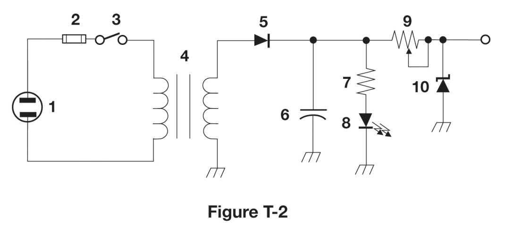
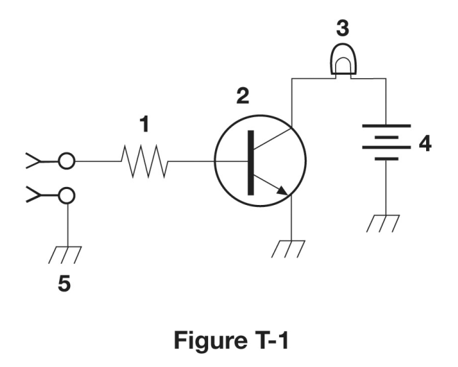
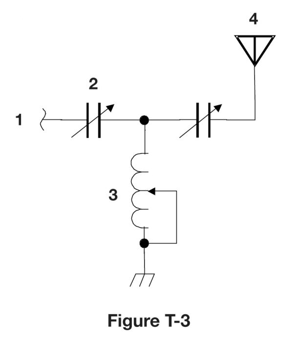

Answer all 35, then press Finish & grade exam at the bottom. You need 26 correct to pass. Blank answers count as wrong.
T1A01[97.1]
Which of the following is part of the Basis and Purpose of the Amateur Radio Service?
✘A.Providing communications for international contesting
✘B.Providing personal radio communications for as many citizens as possible
✔C.Advancing skills in the technical and communication phases of the radio art
✘D.All these choices are correct
T1A02[97.1]
Which agency regulates and enforces the rules for the Amateur Radio Service in the United States?
✔A.The FCC
✘B.ARRL
✘C.Homeland Security
✘D.All these choices are correct
T2C01[97.103(a)]
When do the FCC Part 97 Amateur Radio Service rules NOT apply to the operation of an amateur station?
✘A.When operating under RACES rules
✔B.FCC rules always apply
✘C.When operating under FEMA rules
✘D.When operating under ARES rules
T1A04[97.23]
How do you receive official notification of your new license and call sign after passing the exam?
✔A.Email from the FCC with a link to download the license grant
✘B.USPS First-Class Mail from the lead volunteer examiner
✘C.Email from the lead volunteer examiner
✘D.USPS First-Class Mail from the FCC
T1A05[97.7]
What proves that the FCC has issued an operator/primary license grant?
✘A.A printed copy of the certificate of successful completion of examination
✘B.An email notification from the NCVEC granting the license
✔C.The license appears in the FCC ULS database
✘D.All these choices are correct
T1C10[97.5a]
How soon after passing the examination for your first amateur radio license may you transmit on the amateur radio bands?
✘A.Immediately on receiving your Certificate of Successful Completion of Examination (CSCE)
✘B.As soon as your operator/station license grant appears on the ARRL website
✘C.As soon as you receive your license in the mail from the FCC
✔D.As soon as your operator/station license grant appears in the FCC’s license database
T1C04[97.23]
What may happen if the FCC is unable to reach you by email?
✘A.Revocation of access to the license record in the FCC system
✔B.Revocation of the station license or suspension of the operator license
✘C.Nothing; there is no such requirement
✘D.Fine and suspension of operator license
T1C01[97.9(a), 97.17(a)]
For which classes of amateur radio licenses does the FCC currently issue new licenses?
✔A.Technician, General, Amateur Extra
✘B.Novice, Technician Plus, General, Advanced
✘C.Novice, Technician, General, Amateur Extra
✘D.Technician, Technician Plus, General, Amateur Extra
T1C08[97.25]
What is the normal term for an FCC-issued amateur radio license?
✔A.Ten years
✘B.Five years
✘C.Life
✘D.Eight years
T1C07[97.21, 1.949]
How long before the expiration date may an amateur radio license renewal be requested?
✔A.90 days
✘B.30 days
✘C.6 months
✘D.1 year
T1C09[97.21(a)(b)]
What is the grace period for renewal if an amateur license expires?
✘A.Five years
✘B.Three years
✔C.Two years
✘D.Ten years
T1C11[97.21(b)]
If your license has expired and is still within the allowable grace period, may you continue to transmit on the amateur radio bands?
✔A.No, you must wait until the license has been renewed
✘B.Yes, as soon as you apply for renewal
✘C.Yes, for up to one year
✘D.Yes, for up to two years
T1C05
Which of the following is a valid Group D call sign format for Technician class?
✘A.W1XX
✘B.KA1X
✔C.KF1XXX
✘D.All these choices are correct
T1C02[97.19]
Who may select a desired call sign under the vanity call sign rules?
✘A.Only a licensed amateur with a General or Amateur Extra Class license
✔B.Any licensed amateur
✘C.Only a licensed amateur with an Amateur Extra Class license
✘D.Only a licensed amateur who has been licensed continuously for more than 10 years
T1F06[97.119(c)]
Which of the following self-assigned indicators are acceptable when using a phone transmission?
✘A.KL7CC slant W3
✘B.KL7CC slash W3
✘C.KL7CC stroke W3
✔D.All these choices are correct
T1F03[97.119(a)]
When are you required to transmit your assigned call sign?
✘A.At least once during each transmission
✘B.At least every 15 minutes during and at the end of a communication
✔C.At least every 10 minutes during and at the end of a communication
✘D.At the beginning of each contact, and every 10 minutes thereafter
T1F02[97.119(a)]
How often must you identify with your FCC-assigned call sign when using tactical call signs such as “Race Headquarters”?
✘A.At the end of every transmission
✘B.Once every hour
✔C.At least every 10 minutes during and at the end of a communication
✘D.Never, the tactical call is sufficient
T1F04[97.119(b)(2)]
What language must you use for identification when using a phone emission?
✘A.English, French, or Spanish
✘B.Any language recognized by the ITU
✔C.English
✘D.Any language recognized by the United Nations
T1F05[97.119(b)(2)]
What method of call sign identification is required for a station transmitting phone signals?
✘A.Send the call sign followed by the indicator R
✘B.Send the call sign followed by the indicator RPT
✘C.Send the call sign using only a phone emission
✔D.Send the call sign using a CW or phone emission
T1D12[97.119(a)]
Which of the following is required when making on-the-air test transmissions?
✘A.Conduct tests only between 10 p.m. and 6 a.m. local time
✔B.Identify the transmitting station
✘C.Notify the FCC of the transmissions
✘D.All these choices are correct
T1D11[97.215]
When may an amateur station transmit without identifying on the air?
✔A.When transmitting signals to control model craft
✘B.When the transmissions are of a brief nature to make station adjustments
✘C.When the transmissions are unmodulated
✘D.When the transmitted power level is below 0.1 watt
T1A03[97.119(b)(2)]
What do the FCC rules state regarding the use of a phonetic alphabet for station identification in the Amateur Radio Service?
✘A.It is required when transmitting emergency messages
✘B.It is required when in contact with foreign stations
✔C.It is encouraged when using phone emissions
✘D.All these choices are correct
T2C03
What technique is used to ensure that voice messages containing unusual words are received correctly?
✘A.Send the words by voice and Morse code
✘B.Use the Q-code “QSR” to ask the receiving station to repeat the words back
✔C.Spell the words using a standard phonetic alphabet
✘D.All these choices are correct
T1B01[97.301(e)]
Which of the following frequency ranges are available for phone operation by Technician licensees?
✘A.28.100 MHz to 28.300 MHz
✘B.28.050 MHz to 28.150 MHz
✔C.28.300 MHz to 28.500 MHz
✘D.28.500 MHz to 28.600 MHz
T1B06[97.301(e), 97.305]
On which HF bands does a Technician class operator have phone privileges?
✘A.30-meter band only
✔B.10-meter band only
✘C.None
✘D.80-meter, 40-meter, 15-meter, and 10-meter bands
T1B11[97.313]
What is the maximum peak envelope power output for Technician class operators in their HF band segments?
✔A.200 watts
✘B.10 watts
✘C.50 watts
✘D.100 watts
T1A06[97.203(d)]
On which of the following HF frequencies can automatically controlled amateur propagation beacons be found?
✘A.Anywhere, if they are registered with the FCC
✔B.On ten meters, between 28.200 MHz and 28.300 MHz
✘C.Anywhere in the Technician portion of 10 meters
✘D.In a specific portion of each of the HF Technician bands
T1B12[97.313(b)]
Except for some specific restrictions, what is the maximum peak envelope power output for Technician class operators using frequencies above 30 MHz?
✔A.1500 watts
✘B.100 watts
✘C.500 watts
✘D.50 watts
T1B05[97.301, 97.305]
Which of the following bands include frequencies where Technicians are authorized to use digital modes such as FT8?
✘A.6 meters
✘B.2 meters
✘C.10 meters
✔D.All these choices are correct
T1B03[97.301(a)]
Which frequency is in the 6-meter amateur band?
✘A.28.50 MHz
✘B.49.00 MHz
✘C.222.15 MHz
✔D.52.525 MHz
T1B04[97.301(a)]
Which amateur band includes 146.52 MHz?
✘A.6 meters
✘B.20 meters
✘C.70 centimeters
✔D.2 meters
T1B07[97.305(a), (c)]
Which of the following VHF/UHF band segments are limited to CW only?
✔A.50.0 MHz to 50.1 MHz and 144.0 MHz to 144.1 MHz
✘B.902.0 MHz to 902.1 MHz
✘C.219 MHz to 220 MHz and 420.0 MHz to 420.1 MHz
✘D.All these choices are correct
T1B10[97.305(c)]
Where may SSB phone be used in amateur bands above 50 MHz?
✔A.In at least some segment of all these bands
✘B.Only on repeaters
✘C.On any band if the power is limited to 25 watts
✘D.Only in sub-bands allocated to General class or higher licensees
T1B09[97.101(a), 97.301(a-e)]
Why should you not set your transmit frequency to be exactly at the edge of an amateur band or sub-band?
✘A.So that modulation sidebands do not extend beyond the band edge
✘B.To allow for transmitter frequency drift
✘C.To allow for calibration error in the transmitter frequency display
✔D.All these choices are correct
T1B08[97.303]
How are US amateurs restricted in segments of bands where the Amateur Radio Service is secondary?
✔A.U.S. amateurs may find non-amateur stations in those segments, and must avoid interfering with them
✘B.International communications are not permitted in those segments
✘C.U.S. amateurs must give foreign amateur stations priority in those segments
✘D.Digital transmissions are not permitted in those segments
T1A07[97.3(a)(41)]
What is the FCC Part 97 definition of a space station?
✔A.An amateur station located more than 50 km above Earth's surface
✘B.A manned satellite orbiting Earth
✘C.Any satellite orbiting Earth
✘D.An amateur station using amateur radio satellites for relay of signals
T1B02[97.301, 97.207(c)]
Which of the following U.S. amateur radio operators are allowed to contact the International Space Station (ISS) on VHF bands?
✘A.Any amateurs with a Technician class or higher license, and NASA approval
✘B.Only amateurs with a General class or higher license
✘C.Only amateurs with a General class or higher license, and NASA approval
✔D.Any amateur with a Technician class or higher license
T1E02[97.301, 97.207(c)]
Who may be the control operator of a station communicating through an amateur satellite or space station?
✘A.Only an Amateur Extra Class operator who is also an AMSAT member
✔B.Any amateur allowed to transmit on the satellite uplink frequency
✘C.A General class or higher licensee with a satellite operator certification
✘D.Only an Amateur Extra Class operator
T1F09[97.3(a)(40)]
What type of amateur station simultaneously retransmits the signal of another amateur station on a different channel or channels?
✘A.Beacon station
✘B.Remote control station
✔C.Repeater station
✘D.Message forwarding station
T1F10[97.205(g)]
Who is accountable if a repeater inadvertently retransmits communications that violate the FCC rules?
✘A.The control operator of the repeater
✔B.The control operator of the originating station
✘C.Both the originating station and the repeater owner
✘D.The owner of the repeater
T1A08[97.3(a)(22)]
Who recommends transmit/receive channels for repeater and auxiliary stations?
✘A.An FCC Regional Field Office
✘B.A Frequency Spectrum Manager appointed by the FCC
✔C.A Volunteer Frequency Coordinator recognized by local amateurs
✘D.The International Telecommunication Union
T1A09[97.3(a)(22)]
Who selects a Frequency Coordinator?
✔A.Amateur operators in a local or regional area whose stations are eligible to be repeater or auxiliary stations
✘B.The FCC Regional Field Office
✘C.The local chapter of the Office of National Council of Independent Frequency Coordinators
✘D.The FCC Office of Spectrum Management and Coordination Policy
T1D07[97.113(d), 97.201(e)]
Which of the following is an example of an auxiliary station?
✔A.A station sending one-way transmissions between a remote repeater receiver and the main repeater transmitter
✘B.A backup radio for emergency use in case the main station radio fails
✘C.A station used in the Military Auxiliary Radio System for linking government and amateur stations in a digital network
✘D.A second station utilized in multi-operator contest stations
T1E11[97.3(a)(13)]
What is a control operator as defined in Part 97?
✔A.An amateur operator designated by the licensee of a station to be responsible for transmissions and FCC rules compliance at that station
✘B.The person who is the licensee of an amateur station
✘C.An amateur operator identified in the FCC database as responsible for transmissions and FCC rules compliance at a station license location
✘D.The person speaking or otherwise communicating messages over an amateur station
T1E03[97.103(b)]
Who must designate the station control operator?
✘A.Any licensed operator
✘B.The FCC
✘C.The frequency coordinator
✔D.The station licensee
T1E05[97.3(a)(14)]
What is an amateur station’s control point?
✘A.The location of the station’s transmitting antenna
✔B.The location at which the control operator function is performed
✘C.The mailing address of the station licensee
✘D.The location of the station’s transmitting apparatus
T1E01[97.7(a)]
When may an amateur station transmit without a control operator?
✔A.Never
✘B.When the transmitting station is an auxiliary station
✘C.When the station licensee is away and another licensed amateur is using the station
✘D.When using automatic control, such as in the case of a repeater
T1E07[97.103(a)]
When the control operator is not the station licensee, who is responsible for the proper operation of the station?
✘A.All licensed amateurs who are present at the operation
✘B.Only the control operator
✔C.The control operator and the station licensee
✘D.Only the station licensee
T1E04[97.103(b)]
What determines the transmitting frequency privileges of an amateur station?
✘A.The frequencies printed on the license grant
✘B.The highest class of operator license held by anyone on the premises
✘C.The frequency authorized by the frequency coordinator
✔D.The class of operator license held by the control operator
T1E06[97.301]
When, other than during an emergency, may a Technician class licensee be the control operator of a station operating in an Amateur Extra Class band segment?
✘A.When using a club station whose trustee holds an Amateur Extra Class license
✘B.As part of a multi-operator contest team
✔C.At no time
✘D.When designated as the control operator by an Amateur Extra Class licensee
T2C09
Are amateur station control operators ever permitted to operate outside the frequency privileges of their license class?
✘A.Yes, but only when part of a RACES emergency plan
✔B.Yes, but only in situations involving the immediate safety of human life or protection of property
✘C.Yes, but only when part of a FEMA emergency plan
✘D.No
T1E08[97.3(a)(6), 97.205(d)]
Which of the following is an example of automatic control?
✘A.Controlling a station over the internet
✔B.Repeater operation
✘C.Using a computer or other device to send CW automatically
✘D.Using a computer or other device to identify automatically
T1E09[97.109(c)]
Which amateur stations may be remotely controlled?
✘A.Only digital stations
✔B.Any station
✘C.Only repeater stations
✘D.Only automatically controlled stations
T1E10[97.3(a)(39)]
Which of the following is an example of remote control as defined in Part 97?
✘A.Earth-Moon-Earth (EME) communication
✘B.Controlling a model aircraft, boat, or car by amateur radio
✔C.Operating the station over the internet
✘D.A software defined radio (SDR)
T1D10[97.3(a)(10)]
How does the FCC define broadcasting for the Amateur Radio Service?
✔A.Transmissions intended for reception by the general public
✘B.Transmission of messages directed only to amateur operators
✘C.Any transmission made by the licensed station
✘D.Two-way transmissions by amateur stations
T1D02[97.113(b), 97.111(b)]
Under which of the following circumstances are one-way transmissions by an amateur station prohibited?
✘A.Telecommand or transmissions of telemetry
✘B.International Morse Code Practice
✘C.Announcements of upcoming ham radio operating events
✔D.Broadcasting
T1D04[97.113(a)(4), 97.113(c)]
Under what conditions is an amateur station authorized to transmit music using a phone emission?
✘A.When transmissions are limited to less than three minutes per hour
✔B.When incidental to an authorized retransmission of manned spacecraft communications
✘C.When the music is transmitted above 1280 MHz
✘D.When the music produces no spurious emissions
T1D09[97.113(5)(b)]
When may amateur stations transmit information in support of broadcasting, program production, or news gathering, assuming no other means is available?
✘A.Never
✔B.When such communications are directly related to the immediate safety of human life or protection of property
✘C.When broadcasting communications to or from the space shuttle
✘D.Where non-commercial programming is gathered and supplied exclusively to the National Public Radio network
T1D03[97.211(b), 97.215(b), 97.113(a)(4)]
When is it permissible to transmit messages encoded to obscure their meaning?
✔A.Only when transmitting control commands to space stations or model craft
✘B.Only when using a remote station during a contest
✘C.Only when transmitting certain approved digital codes
✘D.Never
T1D06[97.113(a)(4)]
What, if any, are the restrictions concerning transmission of language that may be considered indecent or obscene?
✔A.Any such language is prohibited
✘B.There is no such prohibition
✘C.The International Telecommunications Union (ITU) maintains a list of words that are not permitted to be used on amateur frequencies
✘D.The FCC maintains a list of words that are not permitted to be used on amateur frequencies
T1A11[97.101(d)]
Which of the following is prohibited?
✔A.Willful or malicious interference
✘B.International communications on VHF bands and higher frequencies
✘C.Third-party traffic using digital modes
✘D.All these choices are correct
T1D08[97.113(a)(3)(iii)]
In which of the following circumstances may the control operator of an amateur station receive compensation for operating that station?
✘A.When the communication is made to obtain emergency information for a local broadcast station
✘B.When the communication is related to the sale of amateur equipment by the control operator's employer
✔C.When the communication is a part of classroom instruction at an educational institution
✘D.All these choices are correct
T1D05[97.113(a)(3)(ii)]
When may amateur radio operators use their stations to notify other amateurs of the availability of equipment for sale or trade?
✘A.Never
✔B.When selling amateur radio equipment and not on a regular basis
✘C.When no profit is made on the sale
✘D.When the equipment is not the personal property of either the station licensee, or the control operator, or their close relatives
T1F08[97.3(a)(47)]
What is the definition of third-party communications?
✘A.Operation when the transmitting equipment is licensed to a person other than the control operator
✘B.Amateur radio communications where three stations are in communications with one another
✔C.A message from a control operator to another amateur station control operator on behalf of another person
✘D.Temporary authorization for an unlicensed person to transmit on the amateur bands for technical experiments
T1F07[97.115(a)(2)]
Which of the following restrictions apply when a non-licensed person speaks to a foreign amateur radio station via a station under the control of an FCC-licensed amateur radio operator?
✔A.The foreign station must be in a country with which the U.S. has a third-party agreement
✘B.The licensed control operator must do the station identification
✘C.The person must be a U.S. citizen
✘D.All these choices are correct
T1C03[97.117]
What types of international communications are FCC-licensed amateur radio stations permitted to make?
✘A.Only communications incidental to contest exchanges; all other communications are prohibited
✘B.Communications incidental to conducting business or remarks of a personal nature
✔C.Communications incidental to the purposes of the Amateur Radio Service and remarks of a personal character
✘D.Any communications that would be permitted by an international broadcast station
T1D01[97.111(a)(1)]
With which countries are FCC-licensed amateur radio stations prohibited from exchanging communications?
✘A.Any country banned from making such communications by the American Radio Relay League (ARRL)
✔B.Any country whose administration has notified the International Telecommunication Union (ITU) that it objects to such communications
✘C.Any country banned from such communications by the International Amateur Radio Union (IARU)
✘D.Any country whose administration has notified the American Radio Relay League (ARRL) that it objects to such communications
T1C06[97.5(a)(2), 97.11(a)]
Which of the following statements is true about using your amateur radio license when operating aboard a vessel or craft in international waters?
✘A.Amateur operation is prohibited in international waters
✔B.You may operate from a US-documented vessel with the master's permission
✘C.You may only operate during maritime emergencies
✘D.You need special FCC authorization for maritime mobile operation
T1F11[97.5(b)(2)]
Which of the following is a requirement for the issuance of a club station license grant?
✘A.The club must be registered with the American Radio Relay League (ARRL)
✘B.The trustee must have an Amateur Extra Class operator license grant
✔C.The club must have at least four members
✘D.All these choices are correct
T1F01[97.103(c)]
When must the station licensee make the station and the station records available for inspection?
✘A.At any time ten days after notification by the FCC of such an inspection
✔B.At any time upon request by an FCC representative
✘C.At any time after a written notification by the FCC of such inspection
✘D.Only when presented with a valid warrant by an FCC official or government agent
T2A07
What does the term "repeater offset" mean?
✔A.The difference between a repeater’s transmit and receive frequencies
✘B.The approximately half-second delay to allow for the “squelch tail” to be removed
✘C.The fee charged by the repeater owner or club to provide for maintenance
✘D.The repeater has a time delay to prevent interference
T2A01
What is a common repeater frequency offset in the 2-meter band?
✘A.Plus or minus 5 MHz
✘B.Plus or minus 1 MHz
✔C.Plus or minus 600 kHz
✘D.Plus or minus 500 kHz
T2A03
What is a common repeater frequency offset in the 70-centimeter band?
✘A.Plus or minus 600 kHz
✔B.Plus or minus 5 MHz
✘C.Plus or minus 500 kHz
✘D.Plus or minus 1 MHz
T2A02
What is the national calling frequency for FM simplex operations in the 2-meter band?
✘A.432.100 MHz
✘B.145.000 MHz
✔C.146.520 MHz
✘D.446.000 MHz
T2A11
What term describes an amateur station that is transmitting and receiving on the same frequency?
✔A.Simplex
✘B.Diplex
✘C.Multiplex
✘D.Full duplex
T2B09
Why are simplex channels designated in the VHF/UHF band plans?
✔A.So stations within range of each other can communicate without tying up a repeater
✘B.So stations with simple transmitters can access the repeater without automated offset
✘C.For working DX only
✘D.For contest operation
T2B01
What is the purpose of the reverse function on a VHF/UHF transceiver?
✘A.To reduce power output
✘B.To increase power output
✘C.To listen on a repeater’s output frequency
✔D.To listen on a repeater’s input frequency
T2B08
Which of the following applies when two stations transmitting on the same frequency interfere with each other?
✘A.Both stations should choose another frequency to avoid conflict
✘B.Whichever station was on the frequency first has preemptive rights to the frequency
✔C.The stations should negotiate continued use of the frequency
✘D.Use subaudible tones so both stations can share the frequency
T2A04
What is an appropriate way to call another station on a repeater if you know the other station's call sign?
✔A.Say the station's call sign, then identify with your call sign
✘B.Say "CQ" three times, then the other station's call sign, followed by your call sign
✘C.Say "break, break," then the other station’s call sign, followed by your call sign
✘D.Wait for the station to call CQ, then answer with your call sign
T2A05
How should you respond to a station calling CQ?
✔A.Transmit the other station’s call sign followed by your call sign
✘B.Transmit a signal report followed by your call sign
✘C.Transmit your call sign followed by the other station’s call sign
✘D.Transmit "CQ" followed by the other station’s call sign
T2A06
What is an effective way to seek a call from any phone station when not using a repeater?
✘A.Say “QTC,” followed by “this is” and your call sign; if there is no answer, change the frequency and repeat
✔B.Repeat “CQ” a few times, followed by “this is,” and your call sign, then pause to listen; repeat as necessary
✘C.Sign your call sign once, followed by the words “listening for a call;” if there is no answer, change the frequency and repeat
✘D.Transmit an unmodulated carrier for approximately 10 seconds, followed by “this is” and your call sign, and pause to listen; repeat as necessary
T2A08
What is the meaning of the procedural signal “CQ”?
✔A.Calling any station
✘B.A shortened form of the term “Contest QSO”
✘C.Only the called station should transmit
✘D.“Communication Quality,” used to indicate transmitted audio clarity
T2A09
Which of the following is a customary way to indicate a station is listening on a repeater and looking for a contact?
✘A.“QSY” followed by your call sign
✘B.The repeater’s call sign followed by the station’s call sign
✔C.The station’s call sign followed by the word “listening”
✘D.“CQ CQ” followed by the repeater’s call sign
T2B04
Which of the following could be the reason you are unable to access a repeater whose output you can hear?
✘A.You are using the wrong DCS code
✘B.Improper transceiver offset
✘C.You are using the wrong CTCSS tone
✔D.All these choices are correct
T2B02
What term describes the use of a sub-audible tone transmitted along with normal voice audio to open the squelch of a receiver?
✘A.Carrier squelch
✔B.CTCSS
✘C.Tone burst
✘D.DTMF
T2B06
What type of signaling to a repeater uses two simultaneous audio tones?
✘A.D-STAR
✔B.DTMF
✘C.CTCSS
✘D.GMRS
T2B03
Which of the following describes a linked repeater network?
✘A.A system of repeaters linked by APRS
✔B.A network of repeaters in which signals received by one repeater are transmitted by all the repeaters in the network
✘C.Multiple repeaters with the same control operator
✘D.A single repeater with more than one receiver
T2B13
What is the purpose of a squelch function?
✘A.Reduce interference from impulse noise
✘B.Reduce a CW transmitter's key clicks
✘C.Eliminate parasitic oscillations in an RF amplifier
✔D.Mute the receiver audio when a signal is not present
T2B05
Which of the following would cause your FM transmission audio to drop out on voice peaks?
✔A.You are talking too loudly
✘B.Your FM deviation is too low
✘C.Your transmit power is too high
✘D.Your repeater offset is inverted
T4B07
What is a DMR “code plug”?
✘A.An adapter cable used to connect a DMR radio to a computer for internet access
✘B.A Coder-Decoder (CODEC) that converts analog voice data to DMR digital data and vice versa
✘C.An upgrade to DMR programming software provided by the radio manufacturer to accommodate new radio models
✔D.Configuration data loaded onto your radio to access repeaters and talkgroups
T2B14
Which of the following is a “talkgroup”?
✔A.An identifier used by DMR to organize radio traffic so that those who want to hear the group aren’t bothered by other radio traffic
✘B.A method of automatically alerting all group members to the frequency where any member is transmitting
✘C.The members of a net organized for amateur radio operators with a specific common interest
✘D.A group of amateur radio operators who share email on a specific amateur radio topic
T2B07
How can you join a digital repeater’s “talkgroup”?
✔A.Program your radio with the group’s ID or code
✘B.Program your radio with the DTMF tone used by the talkgroup
✘C.Register with the local Frequency Coordinator
✘D.Register with the digital repeater control operator
T4B09
How is a specific group of stations selected on a DMR digital voice transceiver?
✘A.By enabling the group’s CTCSS tone
✘B.By inserting a five-pin, pre-programmed code plug
✔C.By entering the group’s identification code
✘D.By retrieving the frequencies from transceiver memory
T2B12
What is the digital color code used on DMR repeater systems?
✔A.An access code which must be programmed into a DMR transmitter to access a specific repeater
✘B.A code which identifies the specific CODEC being used so that the repeater can properly decode the audio
✘C.A code transmitted by the repeater to indicate health and status of the equipment
✘D.A code which automatically programs the repeater offset to a frequency chosen by the user
T2B10
Which Q signal indicates that you are receiving interference from other stations?
✘A.QSB
✔B.QRM
✘C.QRN
✘D.QTH
T2B11
Which Q signal indicates that you are changing frequency?
✘A.QSL
✘B.QRZ
✔C.QSY
✘D.QRU
T2A10
What is a band plan, beyond the privileges established by the FCC?
✘A.A list of available net frequencies
✔B.A voluntary guideline for using different modes or activities within an amateur band
✘C.A plan devised by a club to indicate frequency band usage
✘D.A list of operating schedules
T2C02
Which of the following are typical duties of a Net Control Station?
✔A.Call the net to order and direct communications between stations checking in
✘B.Ensure that all stations checking into the net are properly licensed for operation on the net frequency
✘C.Choose the regular net meeting time and frequency
✘D.All these choices are correct
T2C07
Which of the following is standard practice when you participate in a net?
✘A.When first responding to the net control station, transmit your call sign, name, and address as in the FCC database
✘B.Record the time of each of your transmissions
✔C.Unless you are reporting an emergency, transmit only when directed by the net control station
✘D.All these choices are correct
T2C04
What is RACES?
✘A.A radio contest held in a short period, sometimes called a “sprint”
✔B.An FCC Part 97 amateur radio service for civil defense communications during national emergencies
✘C.An international radio experimentation society
✘D.An emergency organization combining amateur radio and citizens band operators and frequencies
T2C06
What is the Amateur Radio Emergency Service (ARES)?
✘A.A group of licensed amateurs who are members of the military and who voluntarily agreed to provide message handling services in the case of an emergency
✘B.A training program that provides licensing courses for those interested in obtaining an amateur license to use during emergencies
✔C.A group of licensed amateurs who have voluntarily registered their qualifications and equipment for communications duty in the public service
✘D.A training program that certifies amateur operators for membership in the Radio Amateur Civil Emergency Service
T2C12
Which of the following requires certification by a civil defense agency?
✘A.SKYWARN
✘B.ARES
✘C.MARS
✔D.RACES
T1A10[97.407(a)]
Besides an FCC-issued amateur operator license, what is required to be the control operator of a Radio Amateur Civil Emergency Service (RACES) Station?
✘A.Membership in the Amateur Radio Emergency Service (ARES)
✔B.Certification of current enrollment by a civil defense organization
✘C.Nothing
✘D.A written recommendation by the local ARRL Emergency Coordinator
T2C10
What information is contained in the preamble of a formal traffic message?
✔A.Information needed to track the message
✘B.The telephone number of the addressee
✘C.The address of the intended recipient
✘D.The email address of the originating station
T2C11
What is meant by “check” in a radiogram header?
✘A.A box on the message form that indicates that the message was received and/or relayed
✘B.The call sign of the originating station
✔C.The number of words or word equivalents in the text portion of the message
✘D.A list of stations that have relayed the message
T2C05
What does the term “traffic” refer to in net operation?
✔A.Formal messages exchanged by net stations
✘B.Operation by mobile or portable stations
✘C.A count of the number of activations of the net each month
✘D.The number of stations checking in and out of a net
T2C08
Which of the following relays messages using email addresses based on amateur callsigns?
✘A.AMTOR
✘B.FT8
✘C.PSK31
✔D.Winlink
T3B03
What are the two components of a radio wave?
✘A.Voltage and current
✘B.Ionizing and non-ionizing radiation
✘C.Impedance and reactance
✔D.Electric and magnetic fields
T3B01
What is the relationship between the electric and magnetic fields of an electromagnetic wave?
✘A.They travel at different speeds
✔B.They are at right angles
✘C.They revolve in opposite directions
✘D.They are in parallel
T3B02
What property of a radio wave defines its polarization?
✘A.The orientation of the magnetic field
✔B.The orientation of the electric field
✘C.The ratio of the velocity to the wavelength
✘D.The ratio of the energy in the magnetic field to the energy in the electric field
T3B04
What is the velocity of a radio wave traveling through free space?
✘A.Speed of sound
✔B.Speed of light
✘C.0.86 times the speed of light
✘D.1.86 times the speed of sound
T3B11
What is the approximate velocity of a radio wave in free space?
✘A.150,000,000 meters per second
✔B.300,000,000 meters per second
✘C.150,000,000 miles per hour
✘D.300,000,000 miles per hour
T3B12
Which of these frequencies travels at the highest velocity in free space?
✔A.All radio frequencies travel at the same velocity
✘B.UHF
✘C.VHF
✘D.Microwaves
T3B05
What is the relationship between wavelength and frequency?
✔A.Wavelength gets shorter as frequency increases
✘B.Wavelength gets longer as frequency increases
✘C.Wavelength is constant at all frequencies
✘D.Wavelength and frequency increase as path length increases
T3B06
What is the formula for converting frequency to approximate wavelength in meters?
✘A.Wavelength in meters equals frequency in megahertz divided by 300
✘B.Wavelength in meters equals frequency in hertz divided by 300
✔C.Wavelength in meters equals 300 divided by frequency in megahertz
✘D.Wavelength in meters equals frequency in hertz multiplied by 300
T3B07
In addition to frequency, which of the following is used to identify amateur radio bands?
✘A.Channel numbers
✘B.Traditional letter/number designators
✔C.The approximate wavelength in meters
✘D.All these choices are correct
T3B10
What frequency range is referred to as HF?
✘A.300 to 3000 kHz
✘B.30 to 300 MHz
✘C.300 to 3000 MHz
✔D.3 to 30 MHz
T3B08
What frequency range is referred to as VHF?
✘A.300 MHz to 3000 MHz
✘B.300 kHz to 3000 kHz
✘C.30 kHz to 300 kHz
✔D.30 MHz to 300 MHz
T3B09
What frequency range is referred to as UHF?
✔A.300 to 3000 MHz
✘B.30 to 300 MHz
✘C.30 to 300 kHz
✘D.300 to 3000 kHz
T3A01
Why do VHF signal strengths sometimes vary greatly when the antenna is moved only a few feet?
✘A.The signal path encounters different concentrations of water vapor
✘B.The Doppler effect causes slight frequency shifts which result in changes in signal strength
✘C.VHF ionospheric propagation is very sensitive to path length
✔D.Multipath propagation cancels or reinforces signals
T3A06
What is the meaning of the term “picket fencing”?
✘A.Interference from cable TV in the form of carriers at fixed intervals across the band
✘B.A type of ground system used with vertical antennas
✘C.Alternating transmissions during a net operation
✔D.Rapid flutter on mobile signals due to multipath propagation
T3A08
What is a likely cause of irregular fading of signals propagated by the ionosphere?
✘A.Intermodulation distortion
✘B.Interference from thunderstorms
✘C.Frequency shift due to Faraday rotation
✔D.Random combining of signals arriving via different paths
T3A10
What effect does multi-path propagation have on data transmissions?
✔A.Error rates are likely to increase
✘B.No significant changes will occur if the signals are transmitted using FM
✘C.Transmission rates must be increased by a factor equal to the number of separate paths observed
✘D.Transmission rates must be decreased by a factor equal to the number of separate paths observed
T3A05
When using a directional antenna, how might your station be able to communicate with a distant repeater if buildings or obstructions are blocking the direct line of sight path?
✘A.Try the long path
✔B.Try to find a path that reflects signals to the repeater
✘C.Change from vertical to horizontal polarization
✘D.Increase the antenna SWR
T3A03
What antenna polarization is normally used for long-distance CW and SSB contacts on the VHF and UHF bands?
✘A.Right-hand circular
✘B.Left-hand circular
✘C.Vertical
✔D.Horizontal
T3A04
What is the effect of antenna cross-polarization over a line-of-sight VHF or UHF path?
✘A.Modulation sidebands might become inverted
✘B.Signals have an echo effect
✘C.Nothing significant will happen
✔D.Received signal strength is reduced
T3A09
Which of the following results from the fact that signals propagated by the ionosphere are elliptically polarized?
✘A.FM voice is unusable
✔B.Either vertically or horizontally polarized antennas may be used for transmission or reception
✘C.Digital modes are unusable
✘D.Both the transmitting and receiving antennas must be of the same polarization
T3A02
How does vegetation affect UHF and microwave signals?
✘A.Amplifies signals, improving reception of weak signals
✘B.Causes knife-edge diffraction, distorting voice peaks
✔C.Absorbs signals, leading to poor reception of weak signals
✘D.Has no effect
T3A07
What weather condition might decrease range at microwave frequencies?
✔A.Precipitation
✘B.Colder temperatures
✘C.Low barometric pressure
✘D.High winds
T3A12
What effect does fog or rain have on 10-meter and 6-meter band signals?
✘A.Deflection
✘B.Absorption
✔C.Little effect
✘D.Increased range
T3C11
Why is the radio horizon for VHF and UHF signals more distant than the visual horizon?
✘A.Radio signals move somewhat faster than the speed of light
✘B.Radio waves are not blocked by dust particles
✔C.The atmosphere refracts radio waves slightly
✘D.Radio waves are blocked by dust particles
T3C05
Which of the following effects may allow radio signals to travel beyond obstructions between the transmitting and receiving stations?
✔A.Knife-edge diffraction
✘B.Quantum tunneling
✘C.Faraday rotation
✘D.Doppler shift
T3C01
Why are simplex UHF signals rarely heard beyond their radio horizon?
✘A.FCC regulations prohibit them from going more than 50 miles
✘B.They are too weak to go very far
✘C.UHF signals are absorbed by the ionospheric D region
✔D.UHF signals are usually not propagated by the ionosphere
T3A11
Which region of the atmosphere can reflect HF radio waves?
✘A.The electrosphere
✔B.The ionosphere
✘C.The stratosphere
✘D.The troposphere
T3C02
What is a characteristic of HF communication compared with communications on VHF and higher frequencies?
✘A.HF accommodates wider bandwidth signals
✘B.There is less atmospheric interference (static) on HF
✘C.HF antennas are generally smaller
✔D.Long-distance ionospheric propagation is far more common on HF
T3C09
What is generally the best time for long-distance 10-meter band propagation via the F region?
✔A.From dawn to shortly after sunset during periods of high sunspot activity
✘B.From dawn to shortly after sunset during periods of low sunspot activity
✘C.From shortly after sunset to dawn during periods of high sunspot activity
✘D.From shortly after sunset to dawn during periods of low sunspot activity
T3C10
Which of the following bands may provide long-distance communications via the ionosphere’s F region during the peak of the sunspot cycle?
✘A.23 centimeters
✘B.70 centimeters and 1.25 meters
✔C.6 and 10 meters
✘D.All these choices are correct
T3C07
What band is best suited for communicating via meteor scatter?
✘A.70 centimeters
✘B.33 centimeters
✔C.6 meters
✘D.2 meters
T3C03
What is one characteristic of VHF signals received via auroral backscatter?
✔A.They are distorted, with a characteristic raspy sound
✘B.They are generally strongest when your antenna is aimed west
✘C.They occur only during winter nighttime hours
✘D.They are often received from 10,000 miles or more
T3C04
Which of the following types of propagation is most commonly associated with occasional strong signals on the 10-, 6-, and 2-meter bands from beyond the radio horizon?
✘A.Backscatter
✘B.D region absorption
✘C.Gray-line propagation
✔D.Sporadic E
T3C06
What type of propagation is responsible for allowing over-the-horizon VHF and UHF communications to ranges of approximately 300 miles on a regular basis?
✘A.D region refraction
✘B.F2 region refraction
✔C.Tropospheric ducting
✘D.Faraday rotation
T3C08
What causes tropospheric ducting?
✘A.Discharges of lightning during electrical storms
✘B.Sunspots and solar flares
✔C.Temperature inversions in the atmosphere
✘D.Updrafts from hurricanes and tornadoes
T4A01
Which of the following is an appropriate power supply rating for a typical 50-watt output mobile FM transceiver?
✘A.24.0 volts at 4 amperes
✘B.13.8 volts at 4 amperes
✔C.13.8 volts at 12 amperes
✘D.24.0 volts at 12 amperes
T4A03
Why are short, heavy-gauge wires used for a transceiver’s DC power connection?
✘A.To avoid RF interference
✘B.To provide a close match to the power supply output impedance
✔C.To minimize voltage drop when transmitting
✘D.To minimize radiative losses in the power cable
T4A11
Where should the negative power return of a mobile transceiver be connected in a vehicle?
✘A.To any metal part of the vehicle
✘B.Through the transceiver’s mounting bracket
✔C.At the 12-volt battery chassis ground
✘D.To the shell of the power connector
T4A09
How can you determine the length of time that equipment can be powered from a battery?
✘A.Divide the watt-hour rating of the battery by the peak power consumption of the equipment
✘B.Multiply the square of the current rating of the battery by the input resistance of the equipment
✔C.Divide the battery ampere-hour rating by the average current draw of the equipment
✘D.Multiply the watts per hour consumed by the equipment by the battery power rating
T4A05
Where should an RF power meter be installed?
✘A.In the power supply cable, as close as possible to the radio
✘B.In parallel with the push-to-talk line and the antenna
✔C.In the feed line, between the transmitter and antenna
✘D.At the power supply output
T4A02
Which of the following should be considered when selecting an accessory SWR meter?
✘A.The ability of the meter to compensate for a poor transmission line match to the antenna
✘B.The distance that the meter will be located from the antenna
✔C.The frequency and power level at which the measurements will be made
✘D.The maximum SWR anticipated on the transmission line
T4A08
Which of the following conductors is preferred for bonding at RF?
✘A.Copper braid removed from coaxial cable
✘B.Copper-clad steel wire
✘C.Twisted-pair cable
✔D.Flat copper strap
T4A04
How are the audio input and output of a transceiver connected in a station configured to operate using FT8?
✘A.To an FT8 conversion unit, a keyboard, and a computer monitor
✔B.To the audio output and input of a computer running FT8 software
✘C.To a computer connected to the FT8converter.com website
✘D.To a computer running a terminal program and connected to a terminal node controller unit
T4A06
What signals are used in a computer-radio interface for digital mode operation?
✔A.Receive audio, transmit audio, and transmitter keying
✘B.NMEA GPS location and DC power
✘C.Antenna and RF power
✘D.Receive and transmit mode, status, and location
T4A07
Which of the following is one of the connections required between a computer and a transceiver to operate digital modes?
✘A.Computer “line out” to transceiver speaker connector
✘B.Computer “line in” to transceiver push-to-talk
✘C.Computer “line out” to transceiver push-to-talk
✔D.Computer “line in” to transceiver speaker connector
T4A10
What function does a digital mode hotspot perform for nearby transceivers?
✘A.RTTY encoding and decoding without a computer
✘B.FT8 digital communications via AFSK using a smartphone connected to the internet
✔C.Communication with a digital voice or data network
✘D.High-speed digital communications for meteor scatter
T4A12
What is an electronic keyer?
✘A.A device for voice activated switching from receive to transmit
✘B.A device for switching antennas from transmit to receive
✘C.An interlock to prevent unauthorized use of a radio
✔D.A device that assists in manual sending of Morse code
T4B02
Which of the following can be used to enter a transceiver’s operating frequency?
✘A.The Automatic Frequency Control
✔B.The keypad or VFO knob
✘C.The CTCSS or DTMF encoder
✘D.All these choices are correct
T4B05
What does the scanning function of an FM transceiver do?
✔A.Tunes through a range of frequencies to check for activity
✘B.Prevents interference to nearby repeaters
✘C.Tunes through a range of frequencies to determine the antenna’s resonant frequency
✘D.Checks incoming signal deviation
T4B06
Which of the following controls could be used if the voice pitch of a single-sideband signal returning to your CQ call seems too high or low?
✘A.The bandwidth selection
✘B.The AGC or limiter
✔C.The RIT or Clarifier
✘D.The tone squelch
T4B04
What does an FM signal sound like when received slightly off frequency?
✘A.There is no effect except for reduction in amplitude
✔B.The audio becomes distorted
✘C.The audio increases in pitch
✘D.The audio decrease in pitch
T4B03
How is squelch adjusted so that a weak FM signal can be heard?
✘A.Turn on the anti-squelch function
✔B.Set the squelch threshold so that receiver output audio is on all the time
✘C.Turn up the audio level until it overcomes the squelch threshold
✘D.Enable squelch enhancement
T4B08
What is the advantage of having a choice of receiver filter bandwidths in a multimode transceiver?
✘A.Permits monitoring several modes simultaneously by selecting a separate filter for each mode
✘B.Increases the number of frequencies that can be stored in memory
✘C.Increases the amount of offset between receive and transmit frequencies
✔D.Permits noise or interference reduction by selecting a bandwidth matching the mode
T4B10
Which of the following receiver filter bandwidths provides the best signal-to-noise ratio for SSB reception?
✘A.500 Hz
✘B.5000 Hz
✔C.2400 Hz
✘D.1000 Hz
T4B01
What is the effect of excessive microphone gain on SSB transmissions?
✘A.Sideband inversion
✘B.Frequency instability
✘C.Increased SWR
✔D.Distorted transmitted audio
T4B11
Which of the following must be programmed into a D-STAR digital transceiver before transmitting?
✘A.The codec type being used
✘B.Your output power
✔C.Your call sign
✘D.All these choices are correct
T7B01
What can you do if you are told your FM handheld or mobile transceiver is over-deviating?
✘A.Talk louder into the microphone
✘B.Let the transceiver cool off
✔C.Talk farther away from the microphone
✘D.Change to a higher power level
T5A03
What is the term for the flow of electrons in an electric circuit?
✘A.Volts per second
✘B.Amperes per second
✘C.Voltage
✔D.Current
T5A05
A difference in which of the following causes electron flow?
✘A.Ampere-hours
✘B.Capacitance
✘C.Inductance
✔D.Voltage
T5A10
Which term describes the rate at which electrical energy is used?
✔A.Power
✘B.Voltage
✘C.Resistance
✘D.Current
T5A01
Electrical current is measured in which of the following units?
✘A.Ohms
✔B.Amperes
✘C.Watts
✘D.Volts
T5A02
Electrical power is measured in which of the following units?
✘A.Volts
✘B.Watt-hours
✔C.Watts
✘D.Amperes
T5A06
What is the unit of frequency?
✘A.Henry
✘B.Epicycles per second
✔C.Hertz
✘D.Farad
T5A04
What term describes the number of times per second that an alternating current makes a complete cycle?
✘A.Wavelength
✘B.Pulse rate
✘C.Wave number
✔D.Frequency
T5A09
Which of the following describes alternating current?
✘A.Current that alternates between a positive direction and zero
✔B.Current that alternates between positive and negative directions
✘C.Current that alternates between a negative direction and zero
✘D.All these answers are correct
T5A11
What type of current flow is opposed by resistance?
✘A.RF current
✘B.Direct current
✘C.Alternating current
✔D.All these choices are correct
T5A07
Why are metals generally good conductors of electricity?
✔A.They have many free electrons
✘B.They have relatively high Young’s modulus values
✘C.They have relatively high density
✘D.They have many free protons
T5A08
Which of the following is a good electrical insulator?
✘A.Graphite
✘B.Sea water
✘C.Stainless steel
✔D.Glass
T5B01
How many milliamperes is 1.5 amperes?
✘A.0.0000015 milliamperes
✔B.1500 milliamperes
✘C.0.0015 milliamperes
✘D.1,500,000 milliamperes
T5B06
Which is equal to 3000 milliamperes?
✘A.3,000,000 amperes
✘B.0.3 amperes
✔C.3 amperes
✘D.0.003 amperes
T5B05
Which is equal to 500 milliwatts?
✘A.500,000,000 watts
✘B.5 watts
✔C.0.5 watts
✘D.500,000 watts
T5B03
Which is equal to one kilovolt?
✔A.One thousand volts
✘B.One hundred volts
✘C.One one-thousandth of a volt
✘D.One million volts
T5B04
Which is equal to one microvolt?
✔A.One one-millionth of a volt
✘B.One one-thousandth of a volt
✘C.One thousand kilovolts
✘D.One million volts
T5B02
Which is equal to 1,500,000 hertz?
✘A.1500 MHz
✘B.15 GHz
✔C.1500 kHz
✘D.150 kHz
T5B07
Which is equal to 3.525 MHz?
✘A.35.25 kHz
✘B.3,525,000 kHz
✔C.3525 kHz
✘D.0.003525 kHz
T5B12
Which is equal to 28400 kHz?
✘A.2.800 MHz
✘B.284.00 MHz
✔C.28.400 MHz
✘D.28.400 kHz
T5B13
Which is equal to 2425 MHz?
✘A.24.25 GHz
✘B.0.002425 GHz
✘C.242.5 GHz
✔D.2.425 GHz
T5B08
Which is equal to 1,000,000 picofarads?
✘A.0.001 microfarads
✘B.1000 microfarads
✘C.1,000,000,000 microfarads
✔D.1 microfarad
T5B09
Which decibel value most closely represents a power increase from 5 watts to 10 watts?
✘A.5 dB
✔B.3 dB
✘C.10 dB
✘D.2 dB
T5B10
Which decibel value most closely represents a power decrease from 12 watts to 3 watts?
✘A.-9 dB
✘B.-1 dB
✔C.-6 dB
✘D.-3 dB
T5B11
Which decibel value represents a power increase from 20 watts to 200 watts?
✘A.28 dB
✘B.12 dB
✘C.18 dB
✔D.10 dB
T5C01
What describes the ability to store energy in an electric field?
✘A.Frequency
✘B.Inductance
✘C.Resistance
✔D.Capacitance
T5C02
What is the unit of capacitance?
✘A.Henry
✔B.Farad
✘C.Volt
✘D.Ohm
T5C03
What describes the ability to store energy in a magnetic field?
✘A.Capacitance
✔B.Inductance
✘C.Admittance
✘D.Resistance
T5C04
What is the unit of inductance?
✔A.Henry
✘B.Farad
✘C.Coulomb
✘D.Ohm
T5C05
What is the unit of impedance?
✔A.Ohm
✘B.Coulomb
✘C.Volt
✘D.Ampere
T5C12
What is impedance?
✘A.The inverse of resistance
✘B.The inverse of reactance
✔C.The opposition to AC current flow
✘D.The power handling capability of a component
T5C06
What is the abbreviation for kilohertz?
✘A.KHz
✔B.kHz
✘C.KHZ
✘D.khz
T5C07
What is the abbreviation for megahertz?
✔A.MHz
✘B.mHZ
✘C.Mhz
✘D.mHz
T5C08
What formula is used to calculate electrical power (P) in a DC circuit?
✘A.P = E / I
✘B.P = I / E
✔C.P = I x E
✘D.P = I2 x E
T5C09
How much power is delivered by a voltage of 13.8 volts DC and a current of 10 amperes?
✔A.138 watts
✘B.0.7 watts
✘C.3.8 watts
✘D.23.8 watts
T5C10
How much power is delivered by a voltage of 12 volts DC and a current of 2.5 amperes?
✔A.30 watts
✘B.4.8 watts
✘C.0.208 watts
✘D.14.5 watts
T5C11
How much current is required to deliver 120 watts at a voltage of 12 volts DC?
✘A.0.1 amperes
✔B.10 amperes
✘C.12 amperes
✘D.132 amperes
T5D01
What formula is used to calculate current in a circuit?
✔A.I = E / R
✘B.I = E2 / R
✘C.I = E x R
✘D.I = E2 x R
T5D02
What formula is used to calculate voltage in a circuit?
✘A.E = I / R
✔B.E = I x R
✘C.E = I2 x R
✘D.E = I2 / R
T5D03
What formula is used to calculate resistance in a circuit?
✘A.R = E + I
✘B.R = E - I
✘C.R = E x I
✔D.R = E / I
T5D04
What is the resistance of a circuit in which a current of 3 amperes flows when connected to 90 volts?
✘A.1/30 ohm
✘B.3 ohms
✘C.270 ohms
✔D.30 ohms
T5D05
What is the resistance of a circuit for which the applied voltage is 12 volts and the current flow is 1.5 amperes?
✘A.0.125 ohms
✘B.13.5 ohms
✘C.18 ohms
✔D.8 ohms
T5D06
What is the resistance of a circuit that draws 4 amperes from a 12-volt source?
✘A.48 ohms
✔B.3 ohms
✘C.16 ohms
✘D.8 ohms
T5D07
What is the current in a circuit with an applied voltage of 120 volts and a resistance of 80 ohms?
✔A.1.5 amperes
✘B.9600 amperes
✘C.0.667 amperes
✘D.200 amperes
T5D08
What is the current through a 100-ohm resistor connected across 200 volts?
✘A.20,000 amperes
✘B.0.5 amperes
✔C.2 amperes
✘D.100 amperes
T5D09
What is the current through a 24-ohm resistor connected across 240 volts?
✘A.0.1 amperes
✔B.10 amperes
✘C.5760 amperes
✘D.2400 amperes
T5D10
What is the voltage across a 2-ohm resistor if a current of 0.5 amperes flows through it?
✔A.1 volt
✘B.0.25 volts
✘C.1.5 volts
✘D.2.5 volts
T5D11
What is the voltage across a 10-ohm resistor if a current of 1 ampere flows through it?
✘A.9 volts
✘B.1 volt
✔C.10 volts
✘D.11 volts
T5D12
What is the voltage across a 10-ohm resistor if a current of 2 amperes flows through it?
✔A.20 volts
✘B.8 volts
✘C.0.2 volts
✘D.12 volts
T5D13
In which type of circuit is the current always the same through all components?
✘A.Parallel
✘B.Resonant
✔C.Series
✘D.Branch
T5D14
In which type of circuit is the voltage always the same across all components?
✘A.Series
✔B.Parallel
✘C.Branch
✘D.Resonant
T6A01
What electrical component opposes the flow of current in a DC circuit?
✘A.Inverter
✔B.Resistor
✘C.Transformer
✘D.Inductor
T6A02
What type of component is often used as an adjustable volume control?
✘A.Transformer
✔B.Potentiometer
✘C.Power resistor
✘D.Fixed resistor
T6A03
What electrical parameter is controlled by a potentiometer?
✘A.Capacitance
✘B.Field strength
✘C.Inductance
✔D.Resistance
T6A04
What electrical component stores energy in an electric field?
✘A.Resistor
✘B.Inductor
✘C.Diode
✔D.Capacitor
T6A05
What type of electrical component consists of conductive surfaces separated by an insulator?
✔A.Capacitor
✘B.Potentiometer
✘C.Resistor
✘D.Oscillator
T6A06
What type of electrical component stores energy in a magnetic field?
✘A.Capacitor
✘B.Resistor
✔C.Inductor
✘D.Diode
T6A07
What electrical component is typically constructed as a coil of wire?
✘A.Capacitor
✔B.Inductor
✘C.Diode
✘D.Transistor
T6A08
What is the function of an SPDT switch?
✘A.Two circuits are each switched between one of two other circuits
✘B.A single circuit is opened or closed
✘C.Two circuits are opened or closed
✔D.A single circuit is switched between one of two other circuits
T6A09
What type of switch is represented by component 3 in figure T-2?

Figure T-2
✘A.Single-pole double-throw
✘B.Double-pole double-throw
✘C.Double-pole single-throw
✔D.Single-pole single-throw
T6A10
Which of the following battery chemistries is rechargeable?
✘A.Lithium-ion
✘B.Lead-acid
✘C.Nickel-metal hydride
✔D.All these choices are correct
T6A11
Which of the following battery chemistries is not rechargeable?
✘A.Lithium-ion
✔B.Carbon-zinc
✘C.Nickel-cadmium
✘D.Lead-acid
T6B02
What electronic component allows current to flow in only one direction?
✘A.Fuse
✘B.Resistor
✘C.Driven element
✔D.Diode
T6B09
What are the names for the electrodes of a diode?
✘A.Plus and minus
✔B.Anode and cathode
✘C.Source and drain
✘D.Gate and base
T6B06
How is the cathode lead of a semiconductor diode often marked on the package?
✔A.With a stripe
✘B.With the letter C
✘C.With the letter K
✘D.With the word "cathode"
T6B01
Which is true about forward voltage drop in a diode?
✘A.It is proportional to peak inverse voltage
✔B.It is lower in some diode types than in others
✘C.It indicates that the diode is defective
✘D.It has no impact on the voltage delivered to the load
T6B07
What causes a light-emitting diode (LED) to emit light?
✘A.Reverse current
✘B.Capacitively-coupled RF signal
✔C.Forward current
✘D.Inductively-coupled RF signal
T6B03
Which of these components can be used as an electronic switch?
✘A.Potentiometer
✔B.Transistor
✘C.Varistor
✘D.Thermistor
T6B04
Which of the following components can consist of three regions of semiconductor material?
✘A.Alternator
✘B.Triode
✘C.Pentode
✔D.Transistor
T6B10
Which of the following can provide power gain?
✔A.Transistor
✘B.Transformer
✘C.Reactor
✘D.Resistor
T6B05
What type of transistor has a gate, drain, and source?
✘A.Bipolar junction
✘B.Hall-effect
✘C.Varistor
✔D.Field-effect
T6B08
What does the abbreviation FET stand for?
✘A.Free Electron Transmitter
✔B.Field Effect Transistor
✘C.Frequency Emission Transmitter
✘D.Fast Electron Transistor
T6B12
What are the names of the electrodes of a bipolar junction transistor?
✔A.Emitter, base, collector
✘B.Signal, bias, power
✘C.Pole one, pole two, output
✘D.Input, output, supply
T6B11
What does the term gain mean in amplifiers?
✘A.The output signal current relative to the input signal current
✘B.The output signal voltage relative to the input signal voltage
✘C.The output signal power relative to the input signal power
✔D.All these choices are correct
T6C01
What is an electrical diagram using standard component symbols called?
✔A.Schematic
✘B.Connection chart
✘C.Flow chart
✘D.Instrumentation system
T6C02
What is component 1 in figure T-1?

Figure T-1
✘A.Connector
✔B.Resistor
✘C.Transistor
✘D.Battery
T6C03
What is component 2 in figure T-1?
Figure T-1
✔A.Transistor
✘B.Connector
✘C.Indicator lamp
✘D.Resistor
T6C04
What is component 3 in figure T-1?
Figure T-1
✘A.Ground symbol
✘B.Transistor
✔C.Lamp
✘D.Resistor
T6C05
What is component 4 in figure T-1?
Figure T-1
✘A.Resistor
✘B.Ground symbol
✘C.Transistor
✔D.Battery
T6D10
What is the function of component 2 in figure T-1?
Figure T-1
✘A.Convert electrical energy into radio waves
✔B.Control the flow of current
✘C.Supply electrical energy
✘D.Give off light when current flows through it
T6C12
Which of the following is accurately represented in electrical schematics?
✘A.Wire lengths
✘B.Physical appearance of components
✔C.Component connections
✘D.All these choices are correct
T6C06
What is component 6 in figure T-2?
Figure T-2
✘A.Regulator IC
✔B.Capacitor
✘C.Resistor
✘D.Transistor
T6C07
What is component 8 in figure T-2?
Figure T-2
✘A.Resistor
✘B.Regulator IC
✘C.Inductor
✔D.Light emitting diode
T6C08
What is component 9 in figure T-2?
Figure T-2
✘A.Variable transformer
✘B.Variable inductor
✔C.Variable resistor
✘D.Variable capacitor
T6C09
What is component 4 in figure T-2?
Figure T-2
✘A.Variable inductor
✘B.Potentiometer
✘C.Double-pole switch
✔D.Transformer
T6C10
What is component 3 in figure T-3?

Figure T-3
✘A.Connector
✔B.Variable inductor
✘C.Meter
✘D.Variable capacitor
T6C11
What is component 4 in figure T-3?
Figure T-3
✘A.Transmitter
✔B.Antenna
✘C.Ground
✘D.Dummy load
T6D01
Which of the following devices or circuits changes an alternating current into a varying direct current signal?
✘A.Transformer
✘B.Reflector
✘C.Amplifier
✔D.Rectifier
T6D05
What type of circuit controls the amount of voltage from a power supply?
✔A.Regulator
✘B.Oscillator
✘C.Phase inverter
✘D.Filter
T6D06
What component changes 120 V AC power to a lower AC voltage for other uses?
✘A.Transistor
✘B.Diode
✔C.Transformer
✘D.Variable capacitor
T6D02
What is a relay?
✘A.An inverting amplifier
✘B.A current-controlled amplifier
✘C.A pass transistor
✔D.An electrically-controlled switch
T6D03
Which of the following is a reason to use shielded wire?
✘A.To increase the current carrying capability of the wire
✘B.To reduce receiver overload
✔C.To prevent coupling of unwanted signals to or from the wire
✘D.To decrease the resistance of DC power connections
T6D08
Which of the following is combined with an inductor to make a resonant circuit?
✔A.Capacitor
✘B.Potentiometer
✘C.Zener diode
✘D.Resistor
T6D11
Which of the following is a resonant or tuned circuit?
✘A.A circuit designed to provide high-fidelity audio
✘B.A linear voltage regulator
✔C.An inductor and a capacitor in series or parallel
✘D.A resistor circuit used for reducing standing wave ratio
T6D04
Which of the following displays an electrical quantity as a numeric value?
✘A.Relay
✘B.Potentiometer
✘C.Transistor
✔D.Meter
T6D07
Which of the following is commonly used as a visual indicator?
✘A.Zener diode
✔B.LED
✘C.FET
✘D.All these choices are correct
T6D09
What is the name of a device that combines several semiconductors and other components into one package?
✔A.Integrated circuit
✘B.Transducer
✘C.Multi-pole relay
✘D.Transformer
T7A02
What is a transceiver?
✘A.A device for converting receiver and transmitter frequencies to another band
✔B.A device that combines a receiver and transmitter
✘C.A device for automatically sending and decoding Morse code
✘D.A device for matching feed line impedance to 50 ohms
T7A01
Which term describes the ability of a receiver to detect the presence of a signal?
✘A.RF gain
✘B.Total Harmonic Distortion
✔C.Sensitivity
✘D.Selectivity
T7A04
Which term describes the ability of a receiver to discriminate between multiple signals?
✔A.Selectivity
✘B.Sensitivity
✘C.Discrimination ratio
✘D.Harmonic distortion
T7A05
What is the name of a circuit that generates a signal at a specific frequency?
✘A.Reactance modulator
✘B.Low-pass filter
✔C.Oscillator
✘D.Phase modulator
T7A03
Which of the following is used to convert a signal from one frequency to another?
✔A.Mixer
✘B.Phase splitter
✘C.Amplifier
✘D.Inverter
T7A11
What is the function of the Variable Frequency Oscillator (VFO) circuit in a transceiver?
✔A.Set the receive and transmit frequency
✘B.Inject a variable frequency to allow CW reception
✘C.Generate and demodulate single sideband signals
✘D.Provide automatic frequency control
T7A08
Which of the following describes combining speech with an RF carrier signal?
✘A.Low-pass filtering
✘B.Oscillation
✘C.Impedance matching
✔D.Modulation
T7A06
What device converts the RF input and output of a transceiver to another band?
✔A.Transverter
✘B.Low-pass filter
✘C.High-pass filter
✘D.Phase converter
T7A10
What can be added to the output of a transceiver to increase the transmitted output power?
✔A.An RF power amplifier
✘B.A potentiometer
✘C.An impedance multiplier
✘D.All these choices are correct
T7A09
What is the function of the switch which selects either SSB or CW-FM on some VHF power amplifiers?
✘A.Change the frequency range of the amplifier to operate in the proper segment of the band
✔B.Set the amplifier for proper operation in the selected mode
✘C.Change the mode of the transmitted signal
✘D.Reduce the received signal noise
T7A07
What is the function of a transceiver’s PTT input?
✘A.Input for a key used to send CW
✔B.Switches transceiver from receive to transmit when grounded
✘C.Input for a preamplifier tuning tone
✘D.Provides a transmit tuning tone when grounded
T7B02
What would cause a broadcast AM or FM radio to receive an amateur radio transmission unintentionally?
✘A.The deviation of an FM transmitter is set too low
✘B.The audio amplifier of the transmitter is overloaded
✔C.The receiver is unable to reject strong signals outside the AM or FM band
✘D.The microphone gain of the transmitter is turned up too high
T7B03
Which of the following can cause radio frequency interference?
✘A.Harmonics
✘B.Fundamental overload
✘C.Spurious emissions
✔D.All these choices are correct
T7B04
Which of the following might be the cause of low RF power output from a solid-state transceiver?
✔A.High SWR
✘B.Poor amplifier linearity
✘C.Poor amplifier noise figure
✘D.Low SWR
T7B05
Which of the following might reduce interference by an amateur station to a non-amateur over-the-air radio receiver?
✔A.Block the amateur signal with a filter at the antenna input of the affected receiver
✘B.Switch the transmitter to a narrow-band mode
✘C.Block the interfering signal with a filter on the amateur transmitter
✘D.Switch the transmitter from FM to SSB
T7B06
Which of the following actions should you take if a neighbor tells you that your station’s transmissions are interfering with their radio or TV reception?
✘A.Install a harmonic doubler on the output of your transmitter and tune it until the interference is eliminated
✔B.Make sure that your station is functioning properly and that it does not cause interference to your own radio or television when it is tuned to the same channel
✘C.Immediately turn off your transmitter and contact the nearest FCC office for assistance
✘D.All these choices are correct
T7B07
Which of the following can reduce interference to a 2-meter band transceiver from a nearby commercial FM station?
✘A.Installing bypass capacitors on the microphone cable
✘B.Installing an RF preamplifier
✘C.Using double-shielded coaxial cable
✔D.Installing a band-reject filter
T7B08
What should you do if something in a neighbor’s home is causing harmful interference to your amateur station?
✘A.Politely inform your neighbor that FCC rules prohibit the use of devices that cause interference
✘B.Make sure your station meets the standards of good amateur practice
✘C.Work with your neighbor to identify the offending device
✔D.All these choices are correct
T7B09
What should be the first step to resolve non-fiber optic cable TV interference caused by your amateur radio transmission?
✔A.Be sure all TV feed line coaxial connectors are installed properly
✘B.Add a high-pass filter to the TV antenna input
✘C.Add a low-pass filter to the TV antenna input
✘D.Add a preamplifier to the TV antenna input
T7B10
What might be a problem if you receive a report that your audio signal through an FM repeater is distorted or unintelligible?
✘A.You are speaking too loudly or too close to the microphone
✘B.Your transmitter is slightly off frequency
✘C.You are in a bad location
✔D.All these choices are correct
T7B11
Which of the following can eliminate distorted voice transmissions?
✘A.Adding extra feedline to the antenna to lower SWR
✘B.Turning the squelch control fully clockwise to prevent the transmitted signal from triggering the squelch circuit
✔C.Adding a clip-on ferrite “choke” to the microphone cable to prevent the transmitted signal from feeding back into the transmitter
✘D.Turning the radio on and off to reset the computer-controlled circuitry
T7C04
What reading on an SWR meter indicates a perfect impedance match between the antenna and the feed line?
✘A.50:50
✔B.1:1
✘C.Zero
✘D.Full Scale
T7C06
What does an SWR reading of 4:1 indicate?
✘A.Loss of -4 dB
✘B.Good impedance match
✘C.Gain of +4 dB
✔D.Impedance mismatch
T7C05
Why do most solid-state transmitters reduce output power as SWR increases beyond a certain level?
✔A.To protect the RF output amplifier transistors
✘B.To comply with FCC rules on spectral purity
✘C.Because power supplies cannot supply enough current at high SWR
✘D.To lower the SWR on the transmission line
T7C01
What is the primary purpose of a dummy load?
✔A.To prevent transmitting signals over the air when making tests
✘B.To improve the signal-to-noise ratio of a receiver
✘C.To prevent over-modulation of a transmitter
✘D.To improve the efficiency of an antenna
T7C03
What does a typical RF dummy load consist of?
✘A.A low-voltage power supply and a DC relay
✘B.A low-voltage power supply and an AC relay
✔C.A 50-ohm non-inductive resistor mounted on a heat sink
✘D.A 50-ohm inductive reactance mounted in a shielded enclosure
T7C02
Which of the following is used to determine if an antenna is resonant at the desired operating frequency?
✔A.An antenna analyzer
✘B.A Q meter
✘C.A VTVM
✘D.A frequency counter
T7C08
Which instrument can be used to determine SWR?
✘A.Iambic pentameter
✘B.Ohmmeter
✘C.Voltmeter
✔D.Directional wattmeter
T7C07
What happens to power lost in a feed line?
✘A.It increases the SWR
✔B.It is converted into heat
✘C.It distorts the signal
✘D.It is radiated as harmonics
T7C09
Which of the following causes failure of coaxial cables?
✘A.Solder flux contamination
✘B.Rapid fluctuation in transmitter output power
✘C.Operation at 100% duty cycle for an extended period
✔D.Moisture contamination
T7C10
Why should the outer jacket of coaxial cable be resistant to ultraviolet light?
✘A.Ultraviolet light can increase losses in the cable’s jacket
✘B.Ultraviolet light can increase the resistance of the conductors
✔C.Ultraviolet light can damage the jacket and allow water to enter the cable
✘D.Ultraviolet and RF signals can mix, causing interference
T7C11
What is an advantage of foam-dielectric versus solid-dielectric coaxial cable?
✘A.It is more resistant to moisture contamination
✘B.It has higher voltage breakdown
✔C.It has less loss per foot
✘D.It has a better impedance match to 50 ohms
T7D01
Which instrument would you use to measure electric potential?
✘A.An ohmmeter
✔B.A voltmeter
✘C.A potentiometer
✘D.An ammeter
T7D02
How is a voltmeter connected to a component to measure applied voltage?
✘A.In series
✘B.In quadrature
✘C.In phase
✔D.In parallel
T7D04
Which instrument is used to measure electric current?
✘A.A voltmeter
✔B.An ammeter
✘C.An electrometer
✘D.An ohmmeter
T7D03
When configured to measure current, how is a multimeter connected to a component?
✘A.In phase
✘B.In quadrature
✔C.In series
✘D.In parallel
T7D07
Which of the following measurements are made using a multimeter?
✘A.Impedance and reactance
✔B.Voltage and resistance
✘C.Signal strength and noise
✘D.All these choices are correct
T7D06
Which of the following can damage a multimeter?
✘A.Not allowing it to warm up properly
✔B.Attempting to measure voltage when using the resistance setting
✘C.Attempting to measure resistance using the voltage setting
✘D.Failing to connect one of the probes to ground
T7D05
How does an ohmmeter measure the resistance of a circuit or component?
✘A.By applying a variable voltage and measuring the resulting current change
✘B.By placing a variable resistor in parallel with the circuit
✘C.By placing a variable resistor in series with the circuit
✔D.By applying a small current and measuring the resulting voltage
T7D11
Which of the following precautions should be taken when measuring in-circuit resistance with an ohmmeter?
✘A.Ensure that the circuit is grounded
✔B.Ensure that the circuit is not powered
✘C.Ensure that the circuit is operating at the correct frequency
✘D.Ensure that the applied voltages are correct
T7D10
What reading indicates that an ohmmeter is connected across a large, discharged capacitor?
✘A.Steady full-scale reading
✔B.Increasing resistance with time
✘C.Alternating between open and short circuit
✘D.Decreasing resistance with time
T7D08
Which of the following types of solder should not be used for radio and electronic applications?
✘A.Lead-tin solder
✘B.Rosin-core solder
✔C.Acid-core solder
✘D.Tin-copper solder
T7D09
What is the characteristic appearance of a cold tin-lead solder joint?
✘A.A greenish tinge
✘B.Dark black spots
✘C.A bright or shiny surface
✔D.A rough or lumpy surface
T8A01
Which of the following is a form of amplitude modulation?
✔A.Single sideband
✘B.Phase shift keying (PSK)
✘C.Packet radio
✘D.Spread spectrum
T8A02
What type of modulation is commonly used for VHF packet radio transmissions?
✔A.FM or PM
✘B.SSB
✘C.AM
✘D.PSK
T8A04
Which type of modulation is commonly used for VHF and UHF voice repeaters?
✘A.AM
✘B.PSK
✘C.SSB
✔D.FM or PM
T8A03
Which type of voice mode is often used for long-distance (weak signal) contacts on the VHF and UHF bands?
✘A.PM
✔B.SSB
✘C.FM
✘D.DRM
T8A06
Which sideband is normally used for 10-meter HF, VHF, and UHF single-sideband communications?
✘A.Inverted sideband
✔B.Upper sideband
✘C.Suppressed sideband
✘D.Lower sideband
T8A07
What is one characteristic of single sideband (SSB) compared to FM?
✔A.SSB signals have narrower bandwidth
✘B.SSB signals are easier to tune in correctly
✘C.SSB signals are less susceptible to high SWR
✘D.SSB signals are less susceptible to interference
T8A12
Which of the following is a disadvantage of FM compared with single sideband?
✘A.FM signals are more susceptible to high SWR
✘B.FM signals are harder to tune
✔C.Only one signal can be received at a time
✘D.Voice quality is poorer
T8A05
Which of the following signal types has the narrowest bandwidth?
✘A.Slow-scan TV
✘B.SSB voice
✘C.FM voice
✔D.CW
T8A11
What is the approximate bandwidth required to transmit a CW signal?
✘A.15 kHz
✔B.150 Hz
✘C.2.4 kHz
✘D.1000 Hz
T8A08
What is the approximate bandwidth of a typical single sideband (SSB) voice signal?
✘A.1 kHz
✘B.6 kHz
✔C.3 kHz
✘D.15 kHz
T8A09
What is the approximate bandwidth of an FM voice signal on VHF repeaters?
✘A.About 150 kHz
✘B.Less than 500 Hz
✘C.Between 50 and 125 kHz
✔D.Between 10 and 15 kHz
T8A10
What is the approximate bandwidth of AM fast-scan TV transmissions?
✔A.About 6 MHz
✘B.More than 10 MHz
✘C.About 3 MHz
✘D.About 1 MHz
T8B08
What does it mean if a satellite is operating in U/V mode?
✘A.The satellite frequencies are usually variable
✘B.The satellite uplink is in the 15-meter band and the downlink is in the 10-meter band
✔C.The satellite uplink is in the 70-centimeter band and the downlink is in the 2-meter band
✘D.The satellite operates using ultraviolet frequencies
T8B10
What does the term LEO mean in reference to communication satellites?
✔A.Low Earth Orbit, which has a period of around 100 minutes
✘B.Low Energy Orbit, which conserves battery power
✘C.Low Equilibrium Orbit, which has a slightly unstable period
✘D.Low Elevation Orbit, which appears close to the horizon from the earth station
T8B01
What telemetry information is typically transmitted by satellite beacons?
✘A.The signal strength of received signals
✔B.Health and status of the satellite
✘C.Time of day accurate to plus or minus 1/10 second
✘D.All these choices are correct
T8B05
What is a satellite beacon?
✘A.A reflective surface on the satellite
✔B.A transmission from a satellite that contains status information
✘C.The primary transmit antenna on the satellite
✘D.An indicator light that shows where to point your antenna
T8B11
Who is permitted to receive telemetry from an amateur radio satellite?
✘A.Only the satellite control operator
✘B.Only the control operator or a licensed radio amateur who has received the encryption key from the control operator
✔C.Anyone
✘D.Only a licensed radio amateur who has received the encryption key from AMSAT
T8B07
What is Doppler shift in reference to satellite communications?
✘A.A special digital communications mode for some satellites
✘B.A change in the satellite orbit
✔C.An observed change in signal frequency caused by relative motion between the satellite and Earth station
✘D.A mode where the satellite receives signals on one band and transmits on another
T8B09
What causes spin fading of satellite signals?
✘A.Circular polarized noise interference radiated from the sun
✘B.Doppler shift of the received signal
✔C.Rotation of the satellite and its antennas
✘D.Interfering signals within the satellite uplink band
T8B06
Which of the following are inputs to a satellite tracking program?
✔A.The Keplerian elements
✘B.The last observed time of zero Doppler shift
✘C.The satellite transmitted power
✘D.All these choices are correct
T8B03
Which of the following are provided by satellite tracking programs?
✘A.The time, azimuth, and elevation of the start, maximum altitude, and end of a pass
✘B.Maps showing the real-time position of the satellite track over Earth
✘C.The apparent frequency of the satellite transmission, including effects of Doppler shift
✔D.All these choices are correct
T8B02
What is the impact of using excessive effective radiated power on a satellite uplink?
✘A.Possibility of rebooting the satellite control computer
✔B.Blocking access by other users
✘C.Possibility of commanding the satellite to an improper mode
✘D.Overloading the satellite batteries
T8B12
Which of the following is a way to determine whether your satellite uplink power into a linear transponder satellite is neither too low nor too high?
✘A.Compare your signal to others on the downlink using an internet SDR receiver
✘B.Listen for distortion on your downlink signal
✘C.Check your signal strength report in the telemetry data
✔D.Your signal strength on the downlink should be about the same as the beacon
T8B04
What mode of transmission is commonly used by amateur radio satellites?
✘A.FM
✘B.SSB
✘C.CW/data
✔D.All these choices are correct
T8C01
Which of the following methods is used to locate sources of noise interference or jamming?
✘A.Echolocation
✘B.Doppler radar
✔C.Radio direction finding
✘D.Phase locking
T8C02
Which of these items would be useful for a hidden transmitter hunt?
✘A.A directional wattmeter
✔B.A directional antenna
✘C.Calibrated SWR meter
✘D.All these choices are correct
T8C03
What operating activity involves contacting as many stations as possible during a specified period?
✔A.Contesting
✘B.Net operations
✘C.Hidden transmitter hunts
✘D.Simulated emergency exercises
T8C04
Which of the following is good practice when contacting another station in a contest?
✘A.Contacting the station twice to be sure that you are in his log
✘B.Adding “Please copy” before your exchange
✔C.Sending only the minimum information needed for proper identification and the contest exchange
✘D.Signing only the last two letters of your call if there are many other stations calling
T8C05
What is a grid locator?
✘A.A letter-number designator assigned to an azimuth and elevation
✘B.An instrument for locating faults in power amplifiers
✔C.A letter-number designator assigned to a geographic location
✘D.An instrument for radio direction finding
T8C07
What is Voice Over Internet Protocol (VoIP)?
✘A.A technique for measuring the modulation quality of a transmitter using remote sites monitored via the internet
✔B.A method of delivering voice communications over the internet using digital techniques
✘C.A technique employed to “spot” DX stations via the internet
✘D.A set of rules specifying how to identify your station when linked over the internet to another station
T8C08
What is the Internet Radio Linking Project (IRLP)?
✘A.A system for providing access to websites via amateur radio
✔B.A technique to connect amateur radio systems, such as repeaters, via the internet
✘C.A system for informing amateurs in real time of the frequency of active DX stations
✘D.A technique for measuring signal strength of an amateur transmitter via the internet
T8C06
How is over the air access to Internet Radio Linking Project (IRLP) nodes accomplished?
✘A.By using Continuous Tone-Coded Squelch System (CTCSS) tone codes
✘B.By entering the proper internet password
✔C.By using Dual-Tone Multi-Frequency (DTMF) signals
✘D.By obtaining a password that is sent via voice to the node
T8C09
Which of the following protocols enables an amateur station to transmit through a repeater without using a radio to initiate the transmission?
✘A.D-STAR
✔B.EchoLink
✘C.DMR
✘D.IRLP
T8C10
What is required before using the EchoLink system?
✘A.Purchase a license to use the EchoLink software
✘B.Complete the required EchoLink training
✘C.At least a General Class license
✔D.Register your call sign and provide proof of license
T8C11
What is an amateur radio station that connects other amateur stations to the internet?
✘A.A beacon
✘B.A repeater
✔C.A gateway
✘D.A digipeater
T8D01
Which of the following is a digital communications mode?
✘A.FT8
✘B.Packet radio
✘C.IEEE 802.11
✔D.All these choices are correct
T8D02
What is FT8?
✔A.A digital mode capable of low signal-to-noise operation
✘B.A wideband FM voice mode
✘C.An eight-channel multiplex mode for FM repeaters
✘D.A digital slow-scan TV mode with forward error correction and automatic color compensation
T8D06
What does the abbreviation "PSK" mean?
✔A.Phase Shift Keying
✘B.Pulse Shift Keying
✘C.Power Sampled Keying
✘D.Packet Sampled Keying
T8D09
What is CW?
✘A.Error correction for digital transmission using code words
✔B.Another name for a Morse code transmission
✘C.A type of electromagnetic propagation
✘D.A digital mode used primarily on 2-meter FM
T8D04
What is meant by the term "NTSC?"
✔A.An analog fast-scan color TV signal
✘B.A digital transmission standard for encrypting data
✘C.A special mode for satellite uplink
✘D.A frame compression scheme for TV signals
T8D03
What kind of data can be transmitted by APRS?
✘A.GPS position data
✘B.Weather data
✘C.Text messages
✔D.All these choices are correct
T8D05
Which of the following is an application of APRS?
✔A.Providing real-time tactical digital communications in conjunction with a map showing the locations of stations
✘B.Automatically showing the number of packets transmitted via PACTOR during a specific time interval
✘C.Providing information on the number of stations signed into a repeater
✘D.Providing voice over internet connection between repeaters
T8D08
Which of the following is included in packet radio transmissions?
✘A.A checksum that permits error detection
✘B.Automatic repeat request in case of error
✘C.A header that contains the call sign of the station to which the information is being sent
✔D.All these choices are correct
T8D11
What is the role of ARQ in a transmission system?
✘A.A method of compressing data using autonomous reiterative Q codes prior to final encoding
✘B.A special transmission format limited to video signals
✘C.A system used to encrypt command signals to an amateur radio satellite
✔D.An error correction method in which the receiving station detects errors and sends a request for retransmission
T8D07
Which of the following describes DMR?
✘A.An automatic position tracking mode for FM mobiles communicating through repeaters
✘B.A digital technique for transmitting on two repeater inputs simultaneously for automatic error correction
✘C.An automatic computer logging technique for hands-off logging when communicating while operating a vehicle
✔D.A technique for time-multiplexing two digital voice signals on a single 12.5 kHz repeater channel
T8D10
Which of the following operating activities is supported by digital mode software in the WSJT-X software suite?
✘A.Meteor scatter
✘B.Earth-Moon-Earth
✘C.Weak signal propagation beacons
✔D.All these choices are correct
T8D12
Which of the following best describes an amateur radio mesh network?
✔A.An amateur-radio data network using commercial Wi-Fi equipment with modified firmware
✘B.An amateur-radio satellite communications network using modified commercial satellite TV hardware
✘C.A wide-bandwidth digital voice mode employing DMR protocols
✘D.An internet linking protocol allowing communication through repeaters around the world
T9A10
In which direction does a half-wave dipole antenna radiate the strongest signal?
✔A.Broadside to the antenna
✘B.In the direction of the feed line
✘C.Equally in all directions
✘D.Off the ends of the antenna
T9A05
Which of the following increases the resonant frequency of a dipole antenna?
✘A.Inserting coils in series with radiating wires
✘B.Adding capacitive loading to the ends of the radiating wires
✔C.Shortening it
✘D.Lengthening it
T9A01
What is a beam antenna?
✔A.An antenna that concentrates signals in one direction
✘B.An antenna built from square aluminum beams
✘C.An omnidirectional antenna invented by Clarence Beam
✘D.An antenna that focuses the signal into two intense rays
T9A06
Which of the following types of antennas offers the greatest gain?
✘A.5/8 wave vertical
✔B.Yagi
✘C.Isotropic
✘D.J pole
T9A11
What is antenna gain?
✘A.The increase in impedance on receive or transmit compared to a reference antenna
✔B.The increase in signal strength in a specified direction compared to a reference antenna
✘C.The additional power that is required in the antenna when transmitting on a higher frequency
✘D.The additional power that is added to the transmitter power
T9A02
Which of the following describes a type of antenna loading?
✘A.Strengthening the radiating elements of a beam antenna to better resist wind damage
✔B.Electrically lengthening by inserting inductors in radiating elements
✘C.Inserting a resistor in the radiating portion of the antenna to make it resonant
✘D.Installing a spring in the base of a mobile vertical antenna to make it more flexible
T9A08
Why is a 19-inch-long vertical antenna often used on 2 meters?
✔A.It is a resonant quarter-wave
✘B.It is a resonant half-wave
✘C.It has low RF radiation exposure
✘D.It has high gain
T9A09
What is an advantage of a 5/8-wavelength whip antenna for VHF or UHF mobile service compared to a 1/4-wave antenna?
✔A.It has more gain
✘B.It radiates at a higher angle
✘C.It has lower SWR
✘D.It has lower impedance
T9A04
What is a disadvantage of a handheld radio transceiver’s short flexible antenna compared to a full-sized quarter-wave antenna?
✘A.It is more susceptible to receiver desensitization
✘B.It only works on analog signals, not digital ones
✘C.It transmits only circularly polarized signals
✔D.It has low efficiency
T9A03
How is the polarization of an antenna described?
✘A.By the direction of radiation
✔B.By the orientation of the electric field
✘C.By the shape of the driven element
✘D.By the orientation of the magnetic field
T9A07
What is a potential drawback of using a handheld VHF transceiver inside a vehicle that lacks an externally mounted antenna?
✘A.The handheld will overheat due to reflected power in the vehicle
✔B.Signal strength is reduced due to the shielding effect of the vehicle
✘C.The bandwidth of the antenna will decrease, increasing SWR
✘D.The SWR might decrease, decreasing the signal strength
T9B02
What is the most common impedance of coaxial cables used in amateur radio?
✔A.50 ohms
✘B.12 ohms
✘C.600 ohms
✘D.8 ohms
T9B03
Why is coaxial cable the most common feed line for amateur radio antenna systems?
✘A.It has less loss than any other type of feed line
✔B.It is easy to use and requires few special installation considerations
✘C.It can handle more power than any other type of feed line
✘D.It is less expensive than any other type of feed line
T9B05
What happens as the frequency of a signal in coaxial cable is increased?
✘A.The characteristic impedance decreases
✘B.The characteristic impedance increases
✔C.The loss increases
✘D.The loss decreases
T9B08
Which of the following is a source of loss in coaxial feed line?
✘A.Water intrusion into coaxial connectors
✘B.Multiple connectors in the line
✘C.High SWR
✔D.All these choices are correct
T9B10
What is the electrical difference between RG-58 and RG-213 coaxial cable?
✔A.RG-213 cable has less loss at a given frequency
✘B.RG-58 cable can handle higher power levels
✘C.There is no significant difference between the two types
✘D.RG-58 cable has two shields
T9B11
Which of the following types of feed line has the lowest loss?
✔A.Air-insulated hardline
✘B.75-ohm flexible coax
✘C.Multi-conductor unbalanced cable
✘D.50-ohm flexible coax
T9B06
Which of the following connector types is most suitable as an RF connector for frequencies above 400 MHz?
✔A.Type N
✘B.DB-25
✘C.PL-259
✘D.RS-213
T9B07
Which of the following is true of PL-259 type coax connectors?
✘A.They are preferred for microwave operation
✔B.They are commonly used at HF and VHF frequencies
✘C.They are watertight
✘D.They are a bayonet-type connector
T9B04
What is the major function of an antenna tuner (antenna coupler)?
✘A.It automatically selects the proper antenna for the frequency band being used
✘B.It helps a receiver automatically tune in weak stations
✔C.It matches the antenna system impedance to the transceiver's output impedance
✘D.It allows an antenna to be used on both transmit and receive
T9B12
What is standing wave ratio (SWR)?
✘A.The ratio of amplifier power output to input
✔B.A measure of how well a load is matched to a transmission line
✘C.An indication of the quality of your station’s ground connection
✘D.The transmitter efficiency ratio
T9B09
What can cause erratic changes in SWR?
✘A.Overload from a strong local station
✘B.Over-modulation
✘C.Local thunderstorm
✔D.Loose connection in the antenna or feed line
T9B01
Which of the following connectors should be carefully taped for weather protection when used outdoors?
✘A.BNC
✘B.PL259
✘C.Type N
✔D.All these choices are correct
T0A01
Which of the following is a safety hazard of a 12-volt storage battery that lacks internal protection circuitry?
✘A.RF emissions from a nearby transmitter can cause the electrolyte to emit poison gas
✘B.Touching both terminals with your hands can cause electrical shock
✔C.Shorting the terminals can cause burns, fire, or an explosion
✘D.All these choices are correct
T0A10
What hazard exists when rapidly charging or discharging an unprotected battery?
✔A.Overheating or out-gassing
✘B.Overvoltage
✘C.Electric shock
✘D.Excess output ripple
T0A02
What health hazard is posed by electrical current flowing through the body?
✘A.It may cause involuntary muscle contractions
✘B.It may disrupt the electrical functions of cells
✘C.It may cause injury by heating body tissue
✔D.All these choices are correct
T0A03
In the United States, what circuit does black wire insulation indicate in a three-wire 120 V AC cable?
✘A.Neutral
✘B.Equipment ground
✔C.Hot
✘D.Negative
T0A08
Where should a fuse or circuit breaker be installed in a 120V AC power circuit?
✘A.In parallel with the hot conductor only
✔B.In series with the hot conductor only
✘C.In parallel with the hot and neutral conductors
✘D.In series with the hot and neutral conductors
T0A04
What is the purpose of a fuse in an electrical circuit?
✘A.To limit current and prevent shocks
✘B.To prevent power supply ripple from damaging a component
✔C.To remove power in case of an overload
✘D.All these choices are correct
T0A05
Why should a 5-ampere fuse never be replaced with a 20-ampere fuse?
✘A.The larger fuse would be likely to blow because it is rated for higher current
✘B.The power supply ripple would greatly increase
✘C.Voltage drop in the higher current fuse could result in excessively low voltage to the device
✔D.Excessive current could cause a fire
T0A06
What is a good way to guard against electrical shock at your station?
✘A.Ensure all capacitors used for high-voltage DC are fully discharged before working inside equipment
✘B.Use three-wire cords and plugs for all AC powered equipment
✘C.Connect all AC powered station equipment to a common safety ground
✔D.All these choices are correct
T0A11
What hazard exists in a power supply immediately after turning it off?
✘A.Voltage transients from kickback diodes
✔B.Charge stored in filter capacitors
✘C.Leakage flux in the power transformer
✘D.Circulating currents in the dc filter
T0A12
Which of the following precautions should be taken when measuring high voltages with a voltmeter?
✘A.Ensure that the voltmeter has very low impedance
✘B.Ensure that the circuit is grounded through the voltmeter
✘C.Ensure that the voltmeter is set to the correct frequency
✔D.Ensure that the voltmeter and its leads are rated for use at the voltages being measured
T0B03
Under what circumstances is it safe to climb a tower without a helper or observer?
✘A.When no electrical work is being performed
✔B.Never
✘C.When the work being done is not more than 20 feet above the ground
✘D.When no mechanical work is being performed
T0B02
What is required when climbing an antenna tower?
✘A.Have sufficient training on safe tower climbing techniques
✘B.Use appropriate tie-off to the tower at all times
✘C.Always wear an approved climbing harness
✔D.All these choices are correct
T0B07
Which of the following is an important safety rule to remember when using a crank-up tower?
✘A.This type of tower must never be painted
✘B.This type of tower must never be grounded
✔C.This type of tower must not be climbed unless it is retracted, or mechanical safety locking devices have been installed
✘D.All these choices are correct
T0B05
What is the purpose of a safety wire through a turnbuckle used to tension guy lines?
✘A.Provide a ground path for lightning strikes
✘B.Provide an ability to measure for proper tensioning
✘C.Secure the guy line if the turnbuckle breaks
✔D.Prevent loosening of the turnbuckle from vibration
T0B04
Which of the following is an important safety precaution to observe when putting up an antenna tower?
✘A.Insulate the base of the tower to avoid lightning strikes
✘B.Wear a ground strap connected to your wrist at all times
✔C.Look for and stay clear of any overhead electrical wires
✘D.All these choices are correct
T0B06
What is the minimum safe distance from a power line to allow when installing an antenna?
✔A.Enough so that if the antenna falls, no part of it can come within 10 feet of the power wires
✘B.1/2 wavelength at the operating frequency
✘C.The height of the power line above ground
✘D.Add the height of the antenna to the height of the power line and multiply by a factor of 1.5
T0B09
Why should you avoid attaching an antenna to a utility pole?
✔A.The antenna could contact high-voltage power lines
✘B.The antenna may unbalance the power transformer, causing power fluctuations
✘C.The antenna will not work properly because of induced voltages
✘D.All these choices are correct
T0B01
Which of the following is good practice when installing ground wires on a tower for lightning protection?
✔A.Ensure that connections are short and direct
✘B.Make sure all ground wire bends are right angles
✘C.Put a drip loop in the ground connection to prevent water damage to the ground system
✘D.All these choices are correct
T0B08
Which is a proper grounding method for a tower?
✘A.A ferrite-core RF choke connected between the tower and ground
✔B.Separate eight-foot ground rods for each tower leg, bonded to the tower and each other
✘C.A connection between the tower base and a cold-water pipe
✘D.A single four-foot ground rod, driven into the ground no more than 12 inches from the base
T0B10
Which of the following is true when installing grounding conductors used for lightning protection?
✘A.Wires must be carefully routed with precise right-angle bends
✘B.Common grounds must be avoided
✔C.Sharp bends must be avoided
✘D.Use only non-insulated wire
T0A07
Where should a lightning arrester be installed in a coaxial feed line?
✘A.At the antenna feed point
✘B.At the AC power service panel
✔C.On a grounded panel near where feed lines enter the building
✘D.At the output connector of a transceiver
T0A09
What should be done to all external ground rods or earth connections?
✘A.Keep them as far apart as possible
✘B.Waterproof them with silicone caulk or electrical tape
✘C.Tune them for resonance on the lowest frequency of operation
✔D.Bond them together with heavy wire or conductive strap
T0B11
Which of the following establishes grounding requirements for an amateur radio tower or antenna?
✔A.Local electrical codes
✘B.FCC Part 97 rules
✘C.UL recommended practices
✘D.FAA tower lighting regulations
T0C01
What type of radiation are radio signals?
✘A.Alpha radiation
✔B.Non-ionizing radiation
✘C.Ionizing radiation
✘D.Gamma radiation
T0C12
How does RF radiation differ from ionizing radiation (radioactivity)?
✘A.RF radiation is limited in range to a few feet
✔B.RF radiation does not have sufficient energy to cause chemical changes in cells and damage DNA
✘C.RF radiation can only be detected with an RF dosimeter
✘D.RF radiation is perfectly safe
T0C11
What is the definition of duty cycle during the averaging time for RF exposure?
✔A.The percentage of time that a transmitter is transmitting
✘B.The percentage of time that a transmitter is not transmitting
✘C.The difference between the lowest and highest power output of a transmitter
✘D.The difference between the PEP and the average power output of a transmitter
T0C10
Why is duty cycle one of the factors used to determine safe RF radiation exposure levels?
✘A.It takes into account the antenna feed line loss
✔B.It affects the average exposure to radiation
✘C.It takes into account the thermal effects of the final amplifier
✘D.It affects the peak exposure to radiation
T0C03
How does the allowable power density for RF safety change if duty cycle changes from 100 percent to 50 percent?
✘A.There is no adjustment allowed for lower duty cycle
✘B.It increases by a factor of 3
✔C.It increases by a factor of 2
✘D.It decreases by 50 percent
T0C02
Which of the following bands has the lowest maximum permissible exposure for RF safety?
✘A.440 MHz
✘B.1296 MHz
✘C.3.5 MHz
✔D.50 MHz
T0C05
Why do exposure limits vary with frequency?
✘A.Lower frequency RF fields have more energy than higher frequency fields
✔B.The human body absorbs more RF energy at some frequencies than at others
✘C.Higher frequency RF fields are transient in nature
✘D.Lower frequency RF fields do not penetrate the human body
T0C13
Who is responsible for ensuring that no person is exposed to RF energy above the FCC exposure limits?
✔A.The station licensee
✘B.The FCC
✘C.The local zoning board
✘D.Anyone who is near an antenna
T0C04
What factors affect the RF exposure of people near an amateur station antenna?
✘A.Distance from the antenna to a person
✘B.Radiation pattern of the antenna
✘C.Frequency and power level of the RF field
✔D.All these choices are correct
T0C06
Which of the following is an acceptable method to determine whether your station complies with FCC RF exposure regulations?
✘A.By calculation based on computer modeling
✘B.By measurement of field strength using calibrated equipment
✘C.By calculation based on FCC OET Bulletin 65
✔D.All these choices are correct
T0C07
What hazard is created by touching an antenna during a transmission?
✘A.Exposure to ionizing radiation
✘B.Electrocution
✔C.RF burn to skin
✘D.All these choices are correct
T0C08
Which of the following actions can reduce exposure to RF radiation?
✘A.Increase the duty cycle
✘B.Relocate the transmitter
✔C.Relocate antennas
✘D.All these choices are correct
T0C09
How can you make sure your station stays in compliance with RF safety regulations?
✘A.By informing the FCC of any changes made in your station
✔B.By re-evaluating the station whenever an item in the transmitter or antenna system is changed
✘C.By making sure your antennas have low SWR
✘D.By using only Underwriter Laboratories approved transmitting equipment